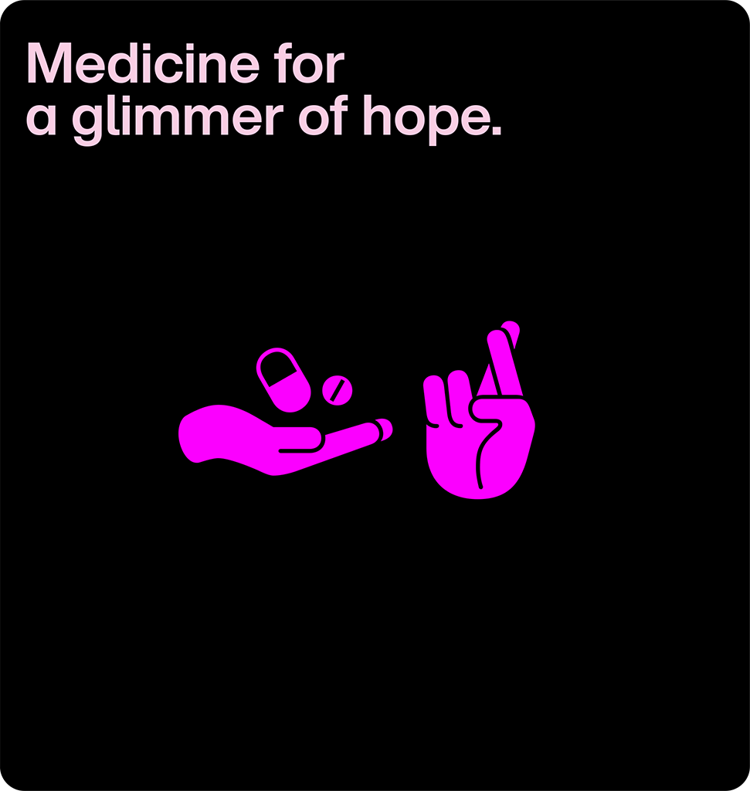
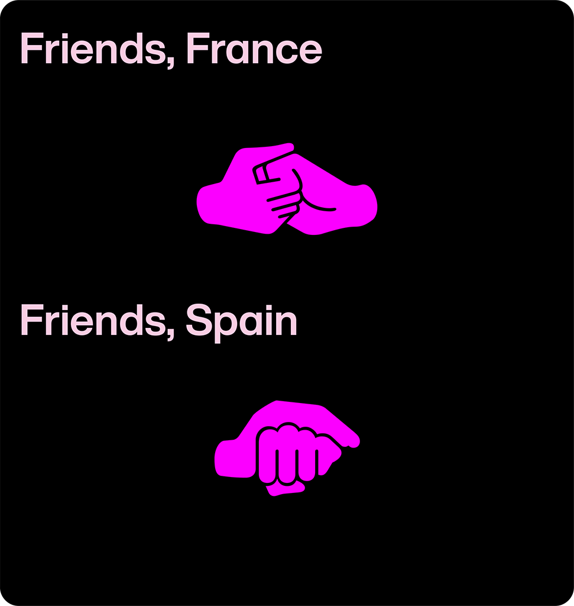
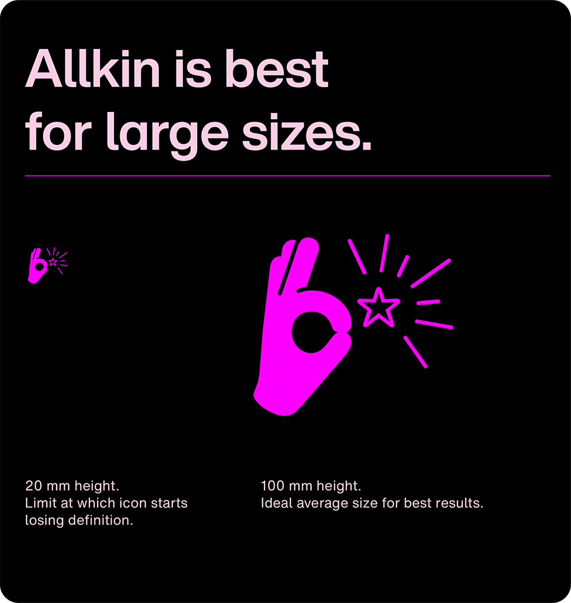
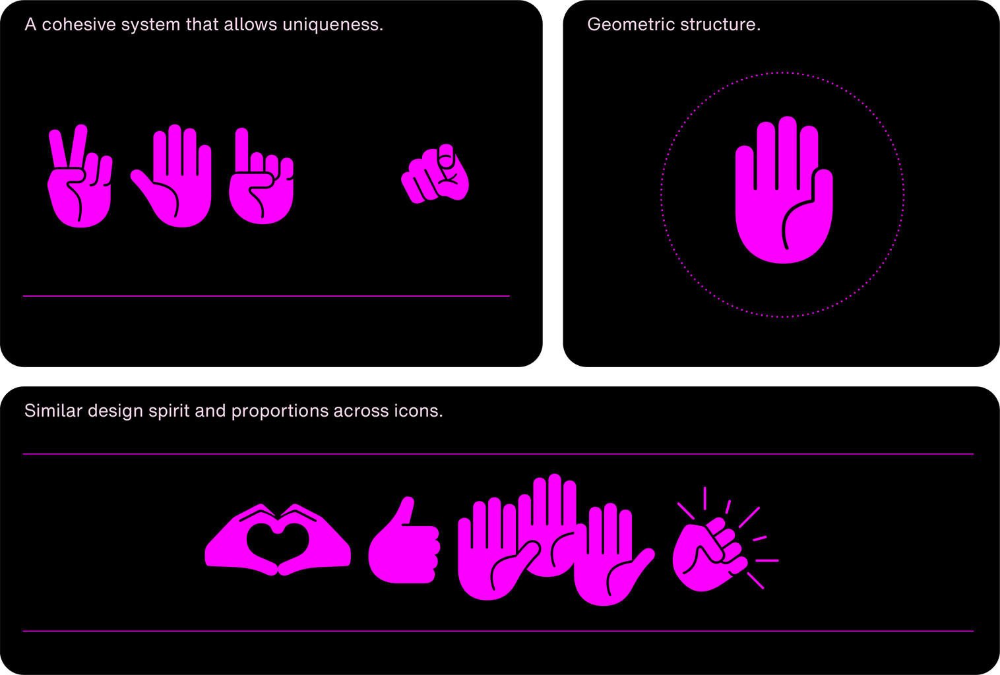
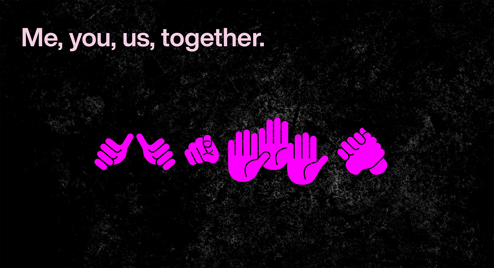
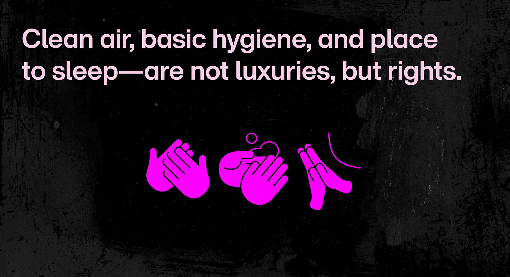
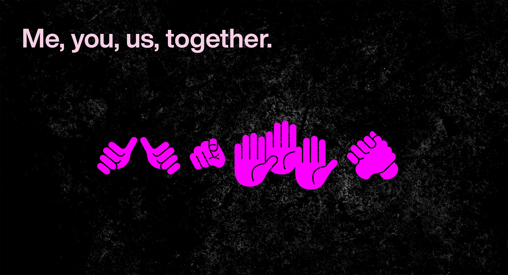
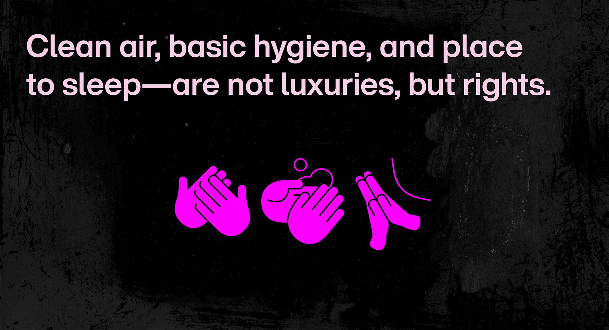

Allkin is a free, open-source hand-based symbol language, available as artwork via The Noun Project and as a font via Google Fonts and Monotype Fonts. Allkin means all human connection.
To contribute, see github.com/googlefonts/allkin.
The system contains 195 hand gestures — aligned to the 193 UN member states plus two observer states. Symbols are organised into categories: fundamental needs, social signs, emotional indicators, and conflict and peace advisories. Combined, they enable expressive, purpose-driven communication that informs and encourages peaceful resolution.
Creating a universal system is no small task — and yes, a risky one. A gesture in one culture may mean something else entirely in another. Allkin embraces these differences, offering multiple gestures for shared meanings. We ask you to use the tool respectfully — and to contribute. As an open-source project, Allkin invites collaboration and dialogue. Access the GitHub repository (link) and expand the design space. Cultivate the differences that make our world so rich, and our nations so unique.
Icons are optimized for visual efficiency, employing minimal detail to ensure strong recognition and impact. For optimal legibility and emphasis, they should be displayed at a relatively large scale—ideally approximating the physical dimensions of a human hand.
Although certain hand gestures are uniquely illustrated to convey specific meanings, the icon set functions as a cohesive system, crafted with the same rigor as a typeface. Parameters such as finger thickness, white line gaps between fingers, and overall hand proportions have been meticulously standardized across all icons. The design achieves a precise balance between geometric simplification and anthropomorphic fidelity. This human quality is preserved by maintaining proportions—fingers, palm, and gestures—close to real hands, avoiding caricature or excessive abstraction
Each icon carries an individual semantic value while belonging to a defined category within the system. Certain icons are reused but convey different messages, reflecting the way hand gestures function in real-life communication. For example, the ‘Yes’, ‘Thank you’ and ‘One’ gestures share the same base form: a thumbs-up. Additionally, icons can be combined to construct composite messages, such as those symbolizing peace, as shown in the following pages.
 



This symbol is a stand against conflict. A signal to the world: I will not engage in violence. Wear it. Share it. Post it. Whatever the situation, it declares: I stand for peace and resolution through collaboration.